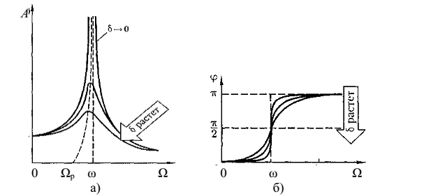

1.2.3 Вынужденные колебания. Резонанс
Видеофрагмент "Свободные и вынужденные колебания" (3:18)
Дифференциальное уравнение вынужденных колебаний имеет
вид:
где f (t) – функция, описывающая внешнее воздействие на
колебательную систему.
Рассмотрим
случай гармонического внешнего воздействия:
Здесь f0 –
амплитуда, а Ω – циклическая частота внешнего воздействия.
В
этом случае решение дифференциального уравнения вынужденных колебаний имеет
вид:
или
,
где - амплитуда вынужденных колебаний,
а начальная фаза вынужденных колебаний:
.
A и φ являются функциями Ω.
Частота Ωр, при которой
амплитуда вынужденных колебаний достигает максимального
значения Aр,
называется резонансной
частотой.
Резкое возрастание амплитуды вынужденных колебаний при приближении циклической частоты внешнего воздействия к Ωр называется резонансом.
Видеофрагмент "Явление механического резонанса" (3:13)
Графики зависимости A(Ω) и φ(Ω) называются амплитудной и фазовой резонансными кривыми:
